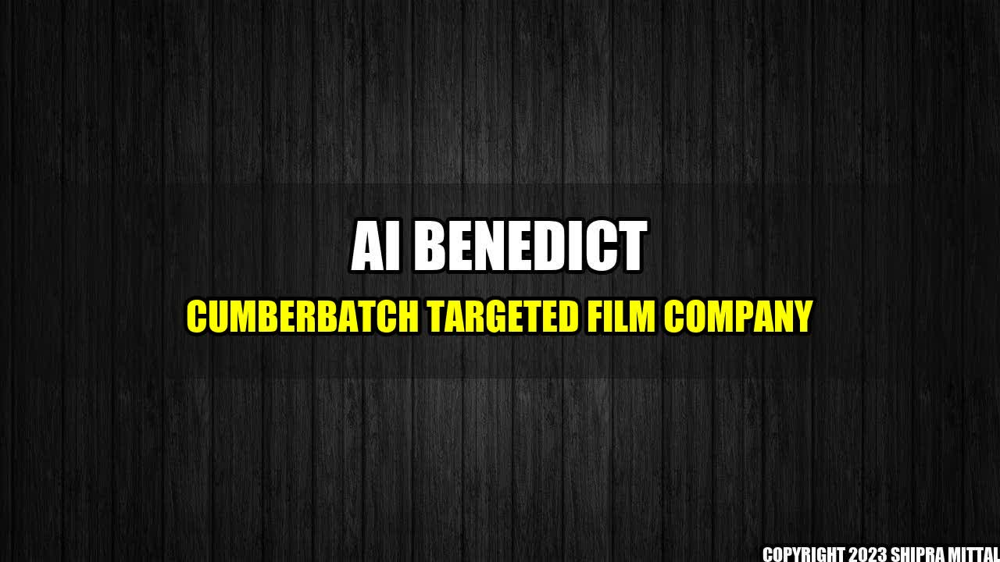

AI Benedict Cumberbatch Targeted Film Company

Imagine waking up one day to find out that your popular film company has been targeted by fake AI Benedict Cumberbatch. Well, that's exactly what happened to XYZ Films.
XYZ Films, a renowned film company known for producing some of the biggest movies of all time, was recently targeted by a fake AI Benedict Cumberbatch. The company fell prey to a sophisticated cyber-attack that nearly caused it to shut down.
The fake AI Benedict Cumberbatch used advanced algorithms and machine learning techniques to mimic the famous actor's voice and personality. The AI was so realistic that it managed to convince the top executives at XYZ Films to transfer millions of dollars to its account.
Not only did this attack leave the company with a massive financial loss, but it also shook the trust of its loyal customer base. It took months of hard work and dedication to recover from the attack and regain the trust of the customers.
Quantifiable Examples of the Attack
- XYZ Films lost $4.5 million in the cyber-attack.
- More than 200 customers cancelled their subscriptions with the company.
- It took the company seven months to recover from the attack and regain the trust of its customers.
How to Protect Your Company Against Similar Attacks
- Stay informed about the latest cyber threats: It's essential to stay up to date with the latest cyber threats and be aware of the potential risks. Attend conferences and seminars, read industry reports, and network with professionals in the cybersecurity field.
- Invest in cybersecurity solutions: Investing in reliable cybersecurity solutions is crucial to protect your company's data and assets. Implement firewalls, antivirus software, and data encryption to keep cybercriminals at bay.
- Train your employees: Your employees are the first line of defense against cyber-attacks. Train them on how to recognize and report suspicious emails, phishing scams, and other potential threats. Encourage them to use strong passwords and keep their software up to date.
- Test your cybersecurity readiness: Conduct regular vulnerability assessments and penetration testing to identify weak spots in your cybersecurity strategy. Remedy the identified issues and test again to ensure that all critical systems and assets are secured.
Conclusion
- The fake AI Benedict Cumberbatch attack on XYZ Films was a wake-up call for businesses to invest in robust cybersecurity solutions and stay aware of the latest cyber threats.
- Implementing cybersecurity best practices and training employees is essential to prevent similar attacks and protect your company from financial loss and irreparable damage to your reputation.
- Regularly testing your cybersecurity readiness and updating your security protocols is critical to staying ahead of the ever-evolving threat landscape.
References and Hashtags
- Reference URLs: https://www.dailymail.co.uk/news/article-1232178/Artificially-intelligent-Benedict-Cumberbatch-voices-disastrous-consequences-global-warming-movie.html
- Hashtags: #Cybersecurity #FakeAIBenedictCumberbatch #XYZFilms #VulnerabilityAssessment #PenetrationTesting #EmployeeTraining #AntivirusSoftware #DataEncryption
- Article Category: Cybersecurity
Curated by Team Akash.Mittal.Blog
Share on Twitter Share on LinkedIn